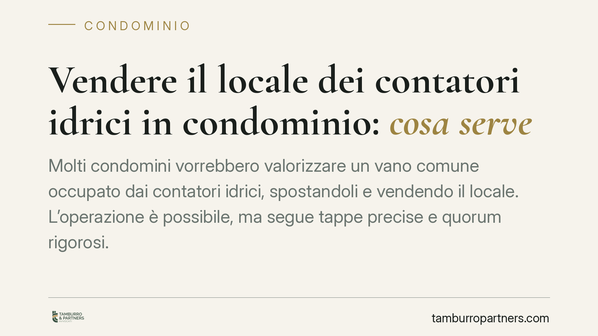
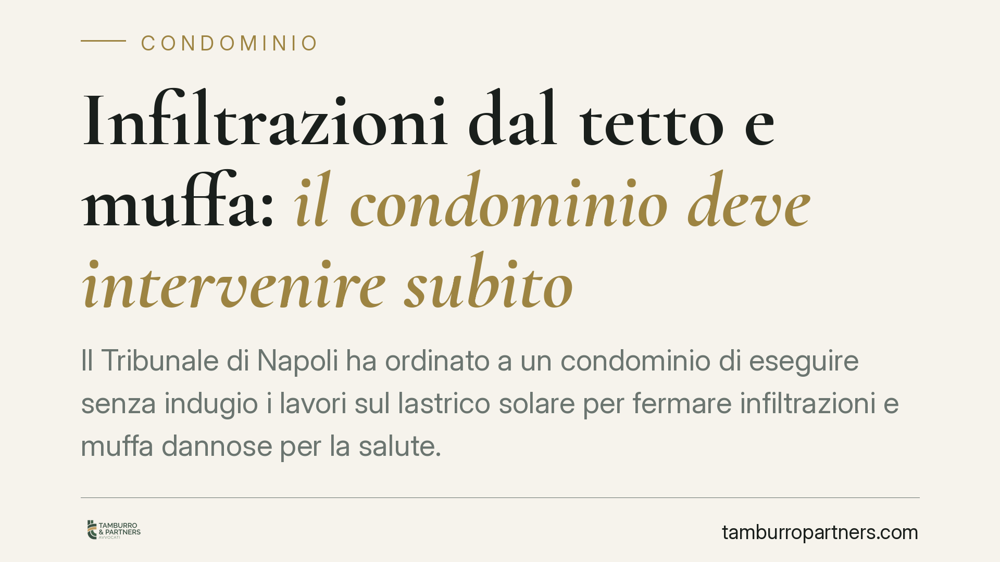
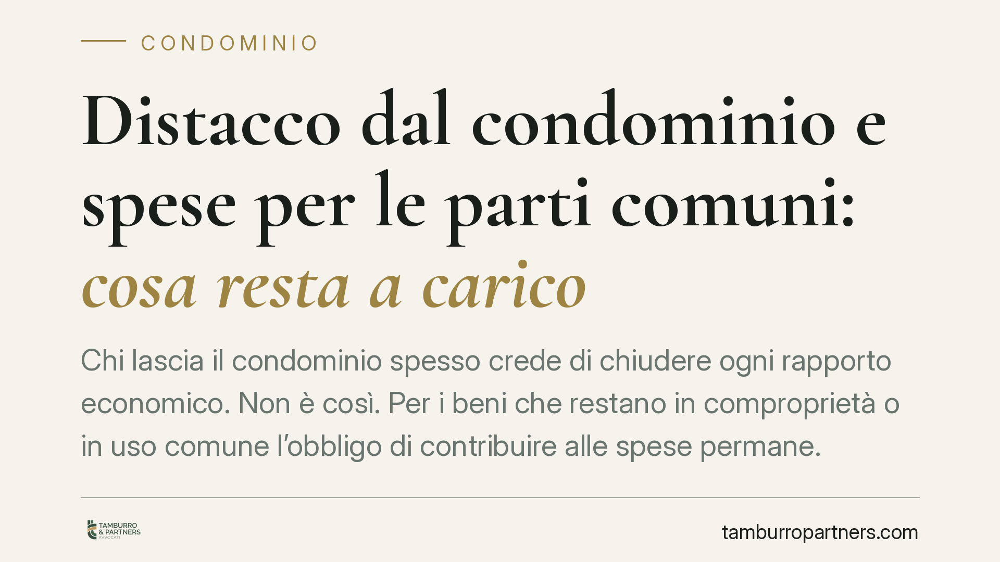
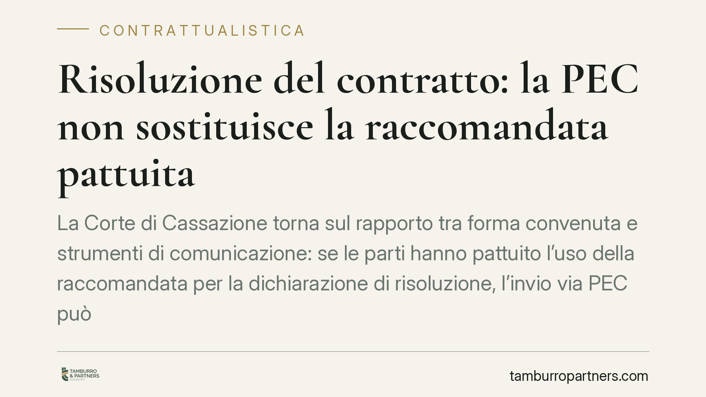

Avviso di convocazione senza doppia adunanza: cosa rischia la delibera condominiale
Una pronuncia del Tribunale di Napoli torna su un punto delicato della vita condominiale: cosa accade se l'avviso di convocazione non indica la data della seconda adunanza. La deli…

Uso dei beni comuni condominiali: limiti in base ai millesimi
Con la sentenza n. 4966/2026 la Corte di Cassazione chiarisce un punto spesso conflittuale: l'assemblea condominiale può regolamentare e limitare l'uso dei beni comuni, come piscin…

Evasione IVA e pagamento rateale: quando il debito riduce la pena
Secondo un orientamento che si sta facendo strada in giurisprudenza, il pagamento rateale di gran parte del debito tributario può rilevare ai fini della particolare tenuità del fat…

Infiltrazioni dal lastrico solare: quando scatta l'urgenza ex art. 700 c.p.c.
Il Tribunale di Napoli ha ordinato l'esecuzione immediata dei lavori sul lastrico solare per fermare le infiltrazioni, accogliendo un ricorso d'urgenza. La decisione conta perché a…

Pannelli solari sul tetto condominiale: come ripartire lo spazio secondo i millesimi
Quando più condomini vogliono installare pannelli fotovoltaici sullo stesso tetto, lo spazio disponibile diventa un bene conteso. Serve un criterio di riparto equo. La soluzione co…

Lavori in quota in appalto: gli obblighi del datore dopo la Cassazione
La Cassazione penale conferma la condanna per omicidio colposo dell'amministratrice di un'impresa di pulizie: un dipendente è morto cadendo da una scala non ancorata. Il principio …

Cambio di destinazione d'uso illecito: quando risponde il proprietario verso il condominio
Il Tribunale di Napoli, con la sentenza n. 10232/2026, affronta un nodo ricorrente: chi risponde verso il condominio quando l'inquilino destina l'immobile a un uso vietato dal rego…

Delibere condominiali e proprietà esclusiva: i limiti al potere dell'assemblea
Può l'assemblea incaricare un tecnico di verificare la regolarità urbanistica dei lavori svolti nell'appartamento di un singolo condomino? La questione tocca il confine tra compete…

Posto auto per il condomino disabile: serve prima la delibera
Il Tribunale di Piacenza ha chiarito un punto spesso frainteso: il condomino disabile non ottiene automaticamente uno stallo riservato nel cortile se il regolamento non lo destina …

Licenziamento su WhatsApp: quando è valido e quando è nullo
Un messaggio di testo su WhatsApp può bastare a licenziare un dipendente, purché rispetti la forma scritta richiesta dalla legge. Una nota vocale, invece, è nulla perché non integr…

Lavoratore dipendente e carica di amministratore: cosa dice la legge
Assumere la carica di amministratore mentre si è lavoratori dipendenti non è vietato in assoluto, ma incontra limiti precisi. Il discrimine è l'obbligo di fedeltà fissato dall'art.…
AI Act e gestione del personale: le scadenze reali per le aziende
L'AI Act è in vigore e si applica per fasi fino al 2027. Per chi gestisce personale il tema è concreto: molti software di selezione e valutazione rientrano tra i sistemi ad alto ri…
Super deduzione assunzioni: cosa cambia con il Ddl Bilancio 2027
Il Ddl di Bilancio 2027 rilancia la super deduzione per il costo del personale assunto a tempo indeterminato, con maggiorazioni rafforzate per giovani e madri, e tocca anche premi,…
Video girati in casa e affido dei figli: quando valgono come prova
Nelle cause di affido è frequente la produzione di video girati in casa per documentare condotte del genitore avverso. Ma un filmato non è automaticamente una prova. Tra tutela del…

Vendere il locale dei contatori idrici in condominio: cosa serve
Molti condomini vorrebbero valorizzare un vano comune occupato dai contatori idrici, spostandoli e vendendo il locale. L'operazione è possibile, ma segue tappe precise e quorum rig…
Responsabilità da prodotto difettoso: nel perimetro anche software e servizi digitali
Il Consiglio dei Ministri ha approvato uno schema di decreto legislativo che riscrive le regole sulla responsabilità da prodotto difettoso. La novità più rilevante: il concetto di …
Esito assolutorio e notizie di cronaca giudiziaria: quali strumenti ha chi è stato assolto
Una condanna in prima battuta che diventa assoluzione, o un procedimento archiviato: la notizia resta online, spesso senza l'esito favorevole. Chi è stato assolto dispone di più st…
Cedolare secca sui negozi: il ritorno dell'aliquota al 21%
Secondo le anticipazioni di stampa, il disegno di legge di Bilancio riapre la cedolare secca al 21% sulle locazioni di negozi (categoria C/1) fino a 300 mq, locati da persone fisic…
Legge Costa: il diritto all'aggiornamento dell'esito favorevole del processo
Il Parlamento ha approvato in via definitiva la cosiddetta Legge Costa, che rafforza il diritto di chi è stato assolto, prosciolto o nei cui confronti sia stata disposta l'archivia…
Accesso fiscale e domicilio: il numero civico che rende inutilizzabile la prova
La Cassazione, con l'ordinanza n. 27858/2026, ha dichiarato inutilizzabile la contabilità parallela rinvenuta in un locale di terzi, con ingresso su diverso numero civico, non cope…
NASpI anticipata negata: la contesa spetta al giudice del lavoro
Chi si vede negare la liquidazione anticipata della NASpI deve rivolgersi al giudice ordinario del lavoro, non al Tar. La prestazione configura un diritto soggettivo, non un intere…

Infiltrazioni dal tetto e muffa: il condominio deve intervenire subito
Il Tribunale di Napoli ha ordinato a un condominio di eseguire senza indugio i lavori sul lastrico solare per fermare infiltrazioni e muffa dannose per la salute. Il punto centrale…
Accesso fiscale nei locali a uso promiscuo: serve la motivazione
Un controllo fiscale che si estende ai locali in cui si vive e si lavora tocca un bene protetto: il domicilio. Quando l'accesso avviene in ambienti a uso promiscuo senza una motiva…

Distacco dal condominio e spese per le parti comuni: cosa resta a carico
Chi lascia il condominio spesso crede di chiudere ogni rapporto economico. Non è così. Per i beni che restano in comproprietà o in uso comune l'obbligo di contribuire alle spese pe…

Risoluzione del contratto: la PEC non sostituisce la raccomandata pattuita
La Corte di Cassazione torna sul rapporto tra forma convenuta e strumenti di comunicazione: se le parti hanno pattuito l'uso della raccomandata per la dichiarazione di risoluzione,…
Tabelle millesimali e validità delle delibere assembleari
Le tabelle millesimali non sono condizione di validità delle delibere assembleari: hanno natura dichiarativa e si limitano a tradurre in frazioni i valori preesistenti delle unità …
Giustizia riparativa: non serve il consenso iniziale della vittima
Con la sentenza n. 8653/2026 la Cassazione precisa i presupposti di accesso ai programmi di giustizia riparativa introdotti dalla Riforma Cartabia. Non occorrono né il consenso ini…

Spese condominiali su cortili e lavori urgenti: chi paga e quando
Due pronunce del 2025 tornano su questioni ricorrenti in condominio: come si dividono le spese per i cortili posti sopra i box e quando il singolo condomino che anticipa un interve…

Accessi della Guardia di Finanza in azienda: limiti e garanzie
Un accesso della Guardia di Finanza nei locali aziendali non è un atto libero: richiede presupposti precisi, motivazione e proporzionalità. Capire i limiti dell'accesso e distingue…

Casa familiare pignorata: quando il diritto di abitazione non protegge
Chi ottiene l'assegnazione della casa familiare dopo la separazione gode di una tutela che però cambia natura se poi acquista la piena proprietà dell'immobile. Secondo un orientame…